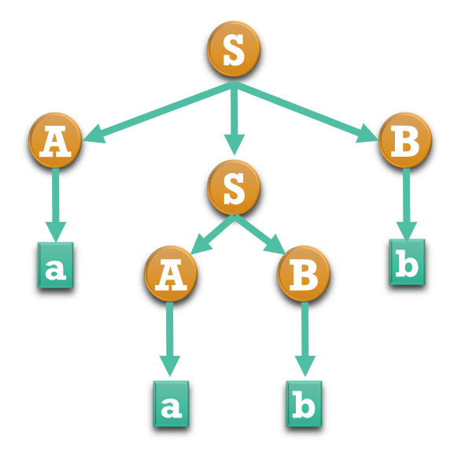

Gramáticas
Analisadores Léxicos
Classificação de Chomsky
- Gramáticas Irrestritas;
- Gramáticas SensÁveis ao Contexto;
- Gramáticas Livres de Contexto;
- Gramáticas Regulares.
Linguagens
| Linguagem | Gramática | Identificador |
|---|---|---|
| Recursivamente Enumerárveis | Gramáticas Irrestritas | Máquina de Touring |
| Lingugagens sensÁveis ao contexto | Gramáticas sensÁveis ao contexto | Maq. Turing com fita limitada |
| Linguagens livres de contexto | Gramáticas livres de contexto | Autômato com pilha |
| Linguagens Regulares | Gramáticas regulares | Autômato finito |
Gramáticas - definição
Uma Gramática Formal: 4-tupla: – $𝑮 := \{𝑵, \Sigma, 𝑷, 𝑺\}$
- $S\rightarrow \text{sÁmbolo inicial}$
- $\Sigma \rightarrow \text{sÁmbolos terminais}$
- $P \rightarrow \text{regras de produção}$
- $N \rightarrow \text{sÁmbolos não terminais}$
SÁmbolos terminais
SÁmbolos termais tem esse nome por que não existem regras para substitui-los. Uma vez gerados, os sÁmbolos terminais são permanentes. Consequentemente, os sÁmbolos termais são os sÁmbolos da linguagem.
Livres de Contexto
“uma gramática livre de contexto descreve um conjunto de strings, ou linguagem, por meio da definição da estrutura das strings da linguagem. Esta definição é recursiva, indicando que cada regra produção pode, ou não, ser utilizada para definir novas regras de produção”
Regras de Produção
Os sÁmbolos que aparecem à esquerda da seta, são não terminais e representados por letras latinas maiúsculas $(𝐴, 𝐵, 𝑆, …)$.
O sÁmbolo inicial é o que aparece do lado esquerdo da primeira regra $𝑆$.
Pode ser qualquer sÁmbolo, usarmos o $𝑆$ por convenção.
Regras de Produção
- $𑆠\rightarrow ğ´ğµ$
- $𑆠\rightarrow ğ´ğ‘†ğµ$
- $𝐴 \rightarrow a$
- $𝐵 \rightarrow b$
Vamos produzir a string:“aabb”
Produzindo $aabb$
Temos $S \rightarrow \emptyset$ e aplicamos 2 $𑺠\rightarrow 𝑨𝑺𝑩$
Temos de $S \rightarrow ASB$ e aplicamos 3 $𑺠\rightarrow a$
Temos de $S \rightarrow aSB$ e aplicamos 4 $𑺠\rightarrow b$
Temos de $S \rightarrow aSb$ e aplicamos 1 $𑺠\rightarrow AB$
Temos de $S \rightarrow aABb$ e aplicamos 3 $𑺠\rightarrow a$
Temos de $S \rightarrow aaBb$ e aplicamos 4 $𑺠\rightarrow b$
Conseguimos: $S \rightarrow aabb$
ExercÁcio 1
Considere a gramática definida por:
- $𑺠\rightarrow ğ‘¨ğ‘©$
- $𑨠\rightarrow \varepsilon | ğ’‚ğ‘¨$
- $𝑩 \rightarrow \varepsilon | 𝒃𝑩$
Encontre uma sequência de substituições para encontrar: $aab$
Gramáticas Regulares
Duas classes de regras de produção.
Lineares à Direita: as regras de produção obedecem: $$𑨠\rightarrow ğ’˜ğ‘© \vee ğ‘¨\rightarrow ğ’˜ (ğ’˜ \in \Sigma^*)$$
Lineares à esquerda: as regras de produção obedecem: $$𑨠\rightarrow ğ‘©ğ’˜ \vee 𑨠\rightarrow ğ’˜ (ğ’˜ \in \Sigma^*)$$
Ávores Sintáticas
- $S$
- $S \rightarrow ASB$
- $S \rightarrow aSB$
- $S \rightarrow aSb$
- $S \rightarrow aABb$
- $S \rightarrow aaBb$
- $S \rightarrow aabb$

Backus-Naur Form - BNF
Representa uma gramática.
É mais simples para leitura.
É mais simples para escrita.
ISO/IEC 14977 : 1996(E).
Backus-Naur Form - BNF
$::= \rightarrow $ “é definido como†ou “pode ser substituÁdo por”
$| \rightarrow $ seleção: ou.
$<> \rightarrow $ não terminais.
Você faz a linguagem, você faz as regras!
BNF - Exemplo
- $\text{<ğ‘™ğ‘–ğ‘ ğ‘¡ğ‘> ∷= <𝑒𝑙𝑒𝑚𝑒𝑛𝑡𝑜>;<ğ‘™ğ‘–ğ‘ ğ‘¡ğ‘> | <𝑒𝑙𝑒𝑚𝑒𝑛𝑡𝑜>}$
- $\text{<𝑒𝑙𝑒𝑚𝑒𝑛𝑡𝑜>∷=<𝑙𝑒𝑡𝑟𝑎> <𝑑𝑖𝑔𝑖𝑡𝑜>}$
- $\text{<𝑙𝑒𝑡𝑟𝑎>∷=𝐴 | 𝐵 |𝐶}$
- $\text{<𝑑𝑖𝑔𝑖𝑡𝑜>∷=1|2|3|4}$
EBNF
- Removeu os $<$$>$ para os sÁmbolos não terminais.
- SÁmbolos termais expressos entre aspas.
- Uso $*$ para fechamento e $\{\}$ para multiplicação.
- Uso de $+$ para um ou mais.
- Uso de $?$ para seleção.
- Parênteses $()$ para agrupamento;
- Substitui $∷=$ por $=$.
- O uso da vÁrgula $,$ para explicitar concatenação.
- O ponto encerra uma regra.
BNF - Exemplo
Considere a seguinte gramática definida em BNF
- $<𝒑𝒓𝒐𝒈𝒓𝒂𝒎> ::= 𝒃𝒆𝒈𝒊𝒏 <𝒔𝒕𝒎𝒕\_𝒍𝒊𝒔𝒕> 𝒆𝒏𝒅$
- $<𝒔𝒕𝒎𝒕_𝒍𝒊𝒔𝒕> ::= <𝒔𝒕𝒎𝒕> | <𝒔𝒕𝒎𝒕> ; <𝒔𝒕𝒎𝒕_𝒍𝒊𝒔𝒕>$.
- $<𝒔𝒕𝒎𝒕> ::= <𝒗𝒂𝒓> = <𝒆𝒙𝒑𝒓>$
- $<𝒆𝒙𝒑𝒓> ::= <𝒕𝒆𝒓𝒎> + <𝒕𝒆𝒓𝒎> | <𝒕𝒆𝒓𝒎> − <𝒕𝒆𝒓𝒎>$
- $<𝒕𝒆𝒓𝒎> ::= <𝒗𝒂𝒓> | 𝒄𝒐𝒏𝒔𝒕$
- $<𝒗𝒂𝒓> ::= 𝒂 | 𝒃 | 𝒄$
Derive o seguinte programa:
$\text{begin } a = b + \text{ const } \text{ end}$
BNF - Exemplo
- $ <program> \Rightarrow \emptyset$
- Regra 1: $ <program> \Rightarrow begin <stmt\_list> \text{ end}$
- Regra 2: $<program> \Rightarrow \text{begin } <stmt> \text{ end}$
- Regra 3: $<program> \Rightarrow \text{begin } <var> = <expr> \text{ end}$
- Regra 6: $<program> \Rightarrow \text{begin } a = <expr> \text{ end}$
- Regra 4: $<program> \Rightarrow \text{begin } a = <term> + <term> \text{ end}$
- Regra 5: $<program> \Rightarrow \text{begin } a = <var> + <term> \text{ end}$
- Regra 6: $<program> \Rightarrow \text{begin } a = b + <term> \text{ end}$
- Regra 5: $<program> \Rightarrow \text{begin } a = b + const \text{ end}$
Parsers
Percorrer, varrer. Técnicas de percorrer uma árvore sintática validando a gramática.
Parsers

Exemplo
Considerando a gramática a seguir, apresente as derivações necessárias para encontrar “abbcde”, usando Bottom-up parser.
- $S \rightarrow aABe$
- $A \rightarrow Abc | b $
- $B \rightarrow d$
Regra 2: $abbcde \Rightarrow aAbcde$
Regra 2: $abbcde \Rightarrow aAde;$
Regra 3: $abbcde \Rightarrow aABe;$
Regra 1: $abbcde \Rightarrow S;$
Código
Vamos criar um parser para validar fórmulas de cálculo proposicional.
- Negação: $\neg P$
- Conjunção: $P\land Q$
- Disjunção: $P\lor Q$
- Implicação: $P\rightarrow Q$
- Implicação Dupla: $P\leftrightarrow Q$
Nosso parser deve ser recursivo e usar latex e notação rpn para a digitação das expressões.
EBNF - ExercÁcio
Vamos criar um parser para validar fórmulas de cálculo proposicional.
- $Formula = Constante | Proposicao | FormulaUnaria | FormulaBinaria.$
- $Constante = "T" | "F".$
- $Proposicao = [a-z0-9]+$
- $FormulaUnaria = AbreParen OperadorUnario Formula FechaParen$
- $FormulaBinaria= AbreParen OperatorBinario Formula Formula FechaParen$
- $AbreParen = "("$
- $FechaParen = ")"$
- $OperatorUnario = "\neg"$
- $OperatorBinario = "\vee" | "\wedge" | "\rightarrow" | "\leftrightarrow"$
Material de apoio
Você pode baixar o material de apoio clicando aqui
Obras Citadas
AHO, A. V. et al. Compiladores: princÁpios, técnicas e ferramentas. 2º. ed. Boston, MA,
USA: Pearson
Education Inc. , 2007.
CASS, S. The 2016 Top Programming Languages. IEEE Spectrum, 2016. DisponÁvel em: